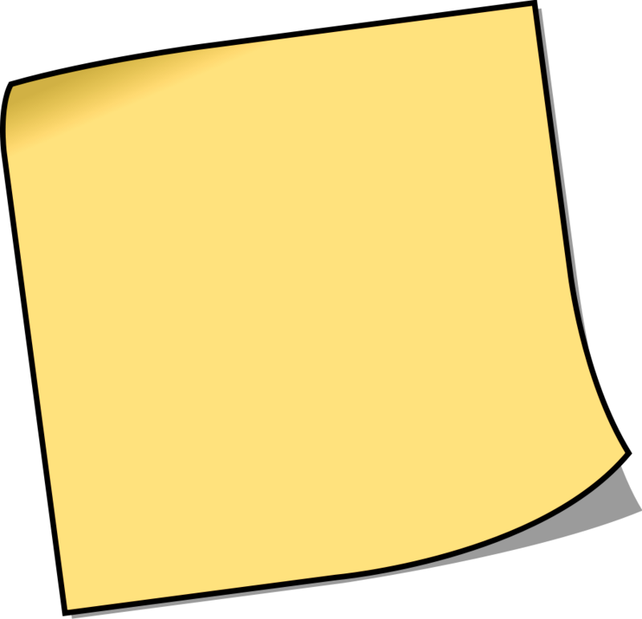
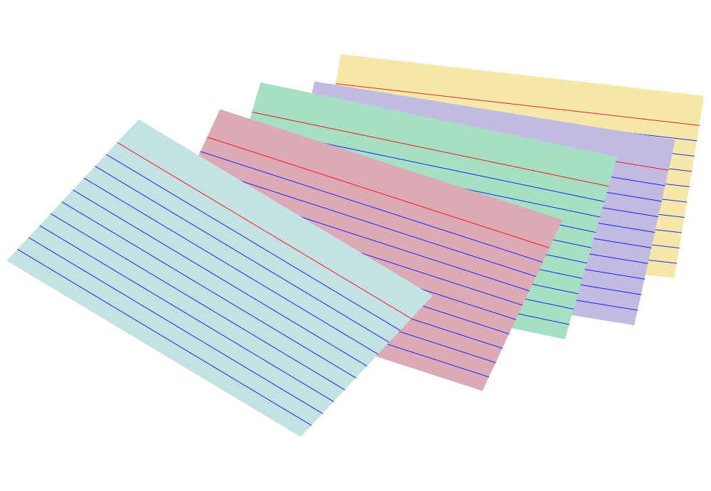
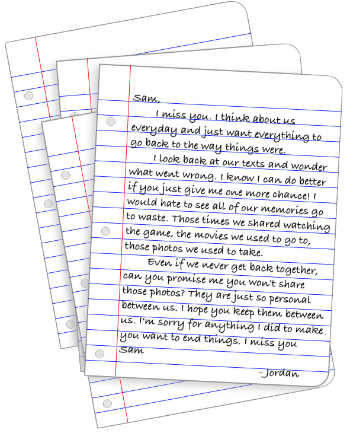

Digital Clue Room | Part 1
Detective! On your way to school, Sam texts you asking you to stop by her place to look for her missing report!
While you're there, you realize you don't really know where anything is!
See if you can help Sam by looking around the room! Good luck!
Start
Good Job Detective!
You are done with this digital clue room! Looks like maybe Sam's report is somewhere else?
Oh well! Maybe you'll come across it at some point later.
Hopefully she doesn't need it first period!
Back to Start



Maybe the report isn't even here...
Don't forget your report on digital privacy! Remember to make stronger passwords and change account settings!
You found a sticky note with a reminder on it!
It reads: "Don't forget your report on digital privacy! Remember to make stronger passwords and change account settings!"
Oh this must be referring to the photo that got out! Probably a good idea for Sam to update all account information and settings!
Maybe it would be a good idea for you to double check that too!
I wonder where that report could be?
Next
Jordan + Sam 4Ever
There is no one like you
Jordan ♡
2.14
Looks like you found a Valentine's day note!
It reads: "Jordan + Sam 4Ever...There is no one like you...Jordan ♡...2.14"
Wow. Sam and Jordan looked like they were really in love!
I wonder how hard it will be for Jordan to get over Sam? Poor Jordan must be heartbroken...
Next
Reminder: Delete photos of me and Jordan or tuck them away in a locked folder
You found another sticky note with a reminder on it!
It reads: "Reminder: Delete photos of me and Jordan or tuck them away in a locked folder"
Do you think the leaked photo could've been a personal photo between Sam and Jordan? Do you think it's a good idea for Sam to delete them?
Next
Hmm just looks like some blank note cards...
These could come in handy for a test!
Doesn't really look Sam's report though.
Pretty interesting idea for a report! Maybe it would be worthwhile to read about Digital Privacy!
Next
What's this?
It looks like papers tucked in between the books!
Hmmm this doesnt look like Sam's report...it looks pretty private...do you still want to read it?
Yes
No
This looks like a letter from Jordan to Sam!
It mentions Jordan not being able to get over Sam! And all of their memories together. Looks like they shared a lot together. Do you think the photos Jordan talked about could be the same photos that were leaked of Sam?
I wonder how Jordan reacted to all of this!
Next